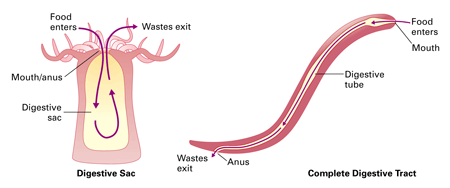

Objectives
- Describe the digestive system of a roundworm.
- List the diverse habitats of roundworms.
- Compare roundworms and rotifers.
Key Terms
If you take a small bit of moss or lichen from the bark of a tree, immerse it in water, and examine a sample under the microscope, you will find an unfamiliar world teeming with tiny animals. One animal that will likely catch your attention is a clear worm thrashing about—a roundworm.
The Body of a Roundworm
Most roundworms, or nematodes (phylum Nematoda), are small, cylindrical worms with somewhat pointed heads and tapered tails. Roundworms range in length from less than 1 mm to more than 7 meters. The largest roundworms are parasites found in whales. Like flatworms, roundworms have three tissue layers. One characteristic that distinguishes roundworms from cnidarians and flatworms is a complete digestive tract. In contrast to a digestive sac (gastrovascular cavity), a complete digestive tract has two openings, a mouth and an anus, at opposite ends of a continuous tube (Figure 23-12). Food travels only one way through a complete digestive tract. In animals with a digestive tract, the anterior region of the tract churns and mixes food with enzymes for digestion. The posterior region absorbs nutrients from the digested food and disposes of wastes. This step-by-step processing of food allows each part of the digestive tube to be highly specialized for its particular function.
|  |
Figure 23-12
In animals with a digestive sac, such as a cnidarian, food enters and wastes exit through the same opening. In contrast, in animals with a complete digestive tract, like a nematode, food enters and wastes exit through different openings. |
Abundance and Diversity of Roundworms
Roundworms are among the most numerous and diverse of all animals on Earth, totalling about 15,000 known species. (Note that "worm" is a general term for a great diversity of invertebrates with elongated bodies. Flatworms, roundworms, and segmented worms, discussed in Concept 23.6, are actually not closely related.) Roundworms live almost every place there is rotting organic matter. These worms are important decomposers in soil and on the bottom of lakes and oceans. Other roundworms thrive as parasites in the moist tissues of plants and in the body fluids and tissues of animals.
Free-living (non-parasitic) roundworms are the most abundant. However, many parasitic species of roundworms are serious agricultural pests that attack the roots of plants or the tissues of animals. Humans can be hosts to at least 50 species of roundworm parasites, including a number that can cause major health problems. One example is a disease called trichinosis. Humans acquire this disease by eating undercooked pork or other meat that is infected with worms. Roundworm parasites of animals are also known by several common names such as hookworm, pinworm, and threadworm. These names are often based on the worm's appearance or the organ it infects.
Rotifers
Rotifers (phylum Rotifera) are tiny animals. Most are smaller than many protists. However, the 1,800 known species of rotifers are multicellular animals with specialized organ systems. Like roundworms, rotifers have complete digestive tracts. Rotifers get their name from their unique crown of cilia. This structure directs water into the rotifer's mouth where food particles can be filtered. This crown of cilia appears to rotate like a wheel (rotifer means "wheel-bearer"). Rotifers are common in freshwater environments such as ponds and even puddles.
Concept Check 23.5
1. How is a roundworm's digestive system different from that of a flatworm?
2. Give an example of roundworms interacting with other organisms.
3. Describe the appearance of a rotifer.